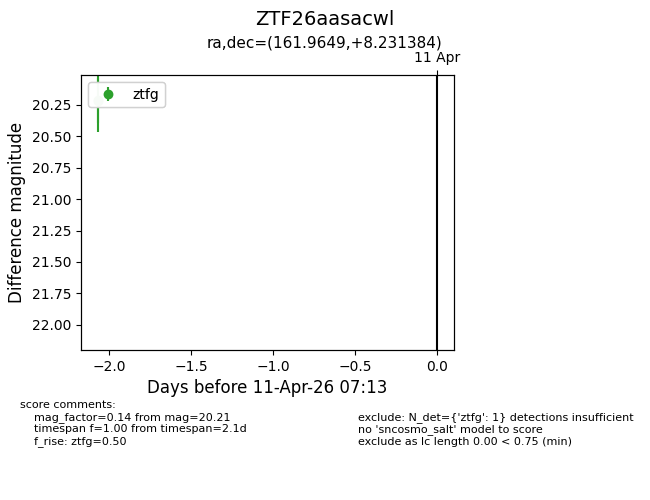
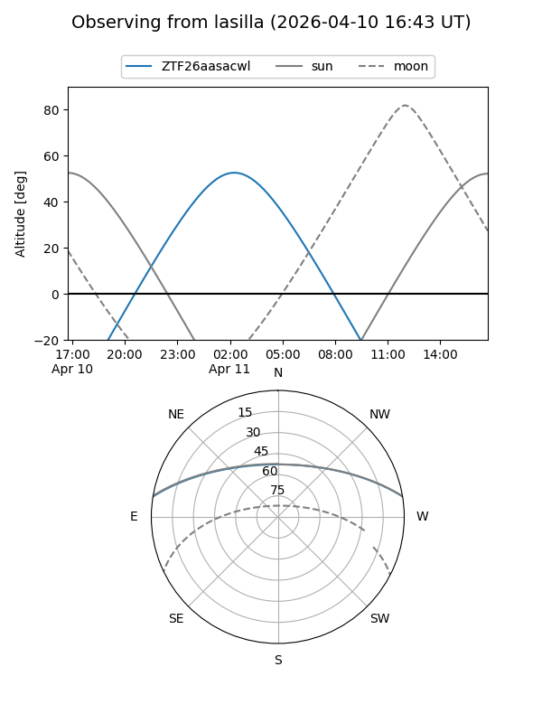
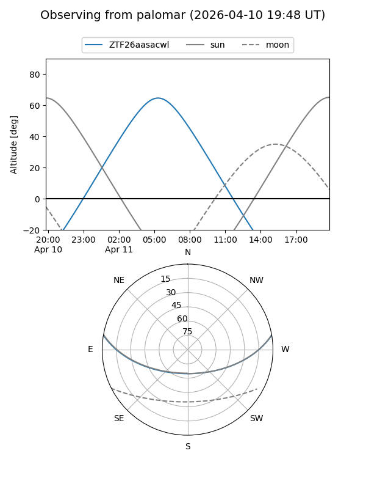

ZTF26aasacwl
Target ZTF26aasacwl at 2026-04-11 07:23
Aliases and brokers:
FINK: link
Lasair: link
ALeRCE: link
alt names
ZTF26aasacwl (ztf,fink_ztf)
Coordinates:
equatorial (ra, dec) = 161.9649,+8.23138
equatorial (HMS+DMS) = 10:47:51.59,+08:13:52.98
galactic (l, b) = (240.0132,+55.19778)
Flags:
Photometry:
last ztfg=20.21
1 ztfg detections
Lightcurve

Visibility


Additional plots